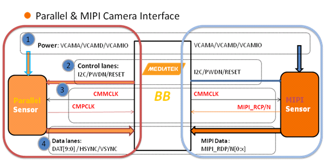
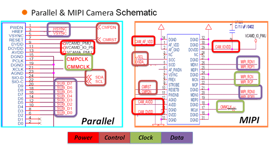
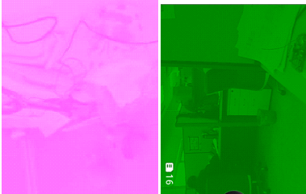
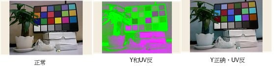

Camera概念篇-Sensor介绍
本部分主要介绍MTK平台支持的Image Sensor类型，硬件接口以及常见基本概念。
1. Image Sensor类型
a) YUV Sensor
YUV Sensor输出的Data格式为YUV，图像的效果处理使用Sensor内部的ISP，BB端接收YUV格式的data后只进行格式的转换，效果方面不进行处理，由于Sensor内部的ISP处理能力有限，且YUV Sensor的数据量比较大（YUV422的格式1个pixel2个byte），一般Size都比较小，常见的YUV sensor都是5M以下。
b) Raw Sensor
Raw Sensor输出的Data格式为Raw，图像的效果处理使用BB端的ISP，BB端接收Raw data后进行一系列的图像处理（OB，Shading，AWB，Gamma，EE，ANR等），效果方面由BB端控制，需要针对不同的模组进行效果调试，Raw sensor是目前的主流，数据量比YUV Sensor小（RAW10 格式的sensor 1个pixel 10个bit）使用平台ISP处理，能支持较大的size。
2. 硬件接口
简单说来，Camera的接口分为并行和串行两种方式，而目前MTK平台主要支持的串行方式为mipi接口，Parallel接口和mipi接口的介绍可以参考下图:


3. 常见基本概念
a) 三路电压
camera包含的三路电压为模拟电压（VCAMA），数字电压（VCAMD），IO口电压（VCAMIO）。
b) I2C信号
平台端与Sensor端通过I2C来通信（读写寄存器），包括SCL（I2C Clock） SDA（I2C Data）信号。
c) mipi几条lane
mipi data是成对的差分信号，MIPI_RDN和MIPI_RDP，有几对这样的pin脚，则说明是几条lane，同一颗sensor由于register setting不同，输出的信号有可能是2 lane或者4lane等。
d) parallel高低八位
Parallel接口一般Data有10根pin，分别叫做Data0Data9，Parallel sensor输出的data信号是8根pin时，这八根pin接到的是Data0Data7还是Data2~Data9，需要配置正确，叫做接到高八位或者低八位，接错了可能产生如下现象:

e) Data Format
Sensor输出的数据格式，对于YUV Sensor来说，Data Fomat一般有YUYV，YVYU，UYVY等，配置不对可能会导致颜色和亮度错掉，例如下图:

f) MCLK
Soc提供给Sensor的外部clock。
g) PCLK
Parallel接口的Sensor输出的clock，该clock变化一次，data更新一次。
h) mipi 信号
mipi信号包括mipi clock和mipi data，该信号是高速信号，用来传输mipi数据包。